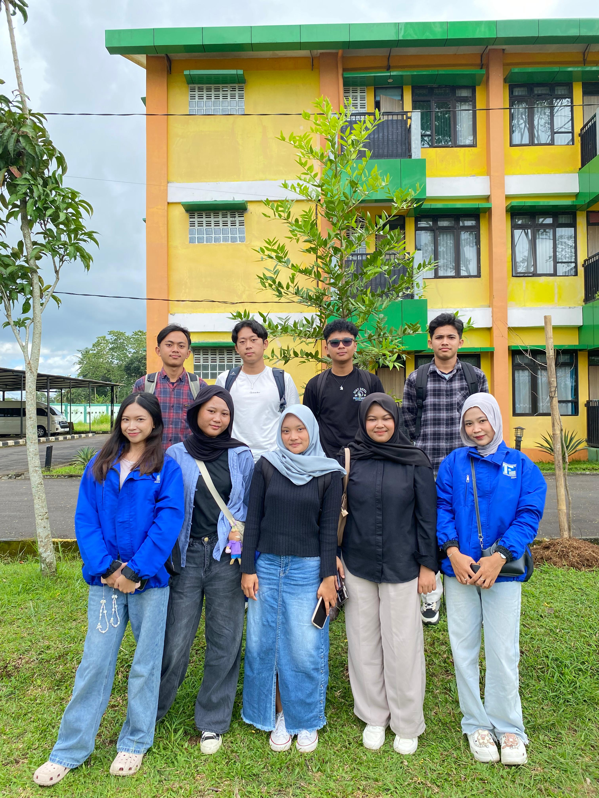

Informatika 25 / LKM
LATIHAN
KEPEMIMPINAN
Mahasiswa.
Membangun narasi baru dalam kepemimpinan teknologi. Eksklusivitas dalam pemikiran, inklusivitas dalam kolaborasi.

Visioner
Melihat apa yang belum terlihat, merancang masa depan dengan presisi tinggi.
Resiliensi
Ketangguhan dalam menghadapi dinamika perubahan dunia informatika.
Inovasi
Melampaui standar untuk menciptakan solusi yang berdampak luas.
ANGGOTA
kelompok
Wajah-wajah di balik inovasi Kelompok 10 Informatika 25.
Pendamping
Teh Sandria
Pendamping Kelompok 10 Angkatan 25
Teh Yura
Pendamping Kelompok 10 Angkatan 25
MODUL
Pembelajaran

Analisis &
Pengembangan
Masyarakat

Public Speaking
Seni retorika digital. Bagaimana mengomunikasikan ide teknologi yang kompleks menjadi narasi yang menginspirasi dan mudah dipahami.

Manajemen Konflik
Mengubah friksi menjadi sinergi. Strategi negosiasi dan resolusi masalah untuk menjaga stabilitas ekosistem kerja tim.

Teknik Persidangan
Landasan pengambilan keputusan demokratis. Memahami protokol formal dalam merumuskan kesepakatan organisasi yang sah.

Kepemimpinan Visioner
Menjadi nahkoda di tengah arus perubahan. Mengembangkan karakter pemimpin yang adaptif, empatik, dan berorientasi pada masa depan.

Manajemen Aksi
Implementasi ide menjadi gerakan nyata. Perencanaan taktis, manajemen sumber daya, dan eksekusi program kerja yang berdampak.

Berpikir Kritis
Kemampuan membedah kompleksitas. Menajamkan nalar untuk mengevaluasi informasi dan mengambil keputusan berbasis data yang kuat.

Etika & Profesionalisme
Menjaga marwah dalam berkarya. Membangun standar moral dan profesional yang tinggi dalam setiap interaksi di dunia IT dan organisasi.